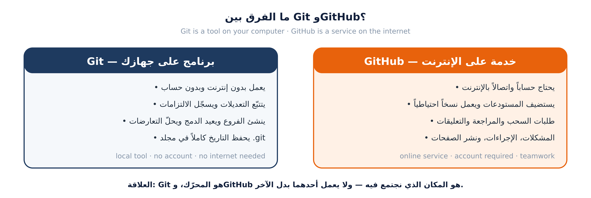
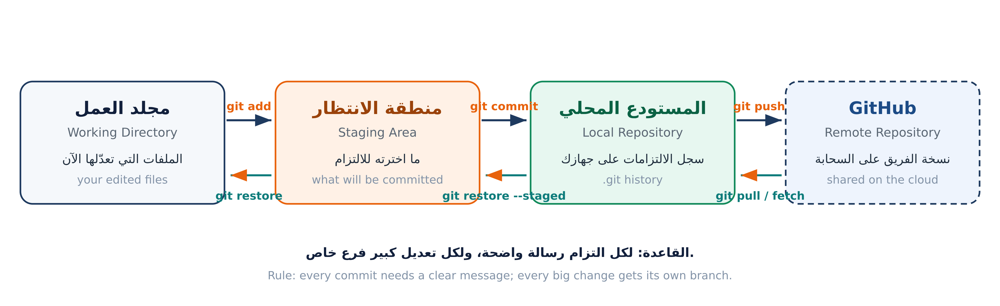

البرنامج كله مبني على مشروع واحد: تتعلم Git لأنك تحتاجه فعلاً، لا لأن هناك واجباً.

git status أين يعمل؟ — على جهازكاختبر نفسك: أي الأمرين يحتاج إنترنت؟ git commit أم git push؟ (الجواب: الثاني فقط)

| الأمر | المنطقة | التشبيه |
|---|---|---|
| git status | لا يعدّل — يعرض الحالة | لوحة القيادة |
| git add | إلى منطقة الانتظار | تحضير الطلب |
| git commit | إلى المستودع المحلي | تسليم الطلب |
| git push | إلى GitHub | إرسال للفرع |
| git pull | من GitHub إلى جهازك | استلام تحديثات الزملاء |
الترتيب الإلزامي: add ← commit ← push. لا يمكن تخطي خطوة.
القاعدة الذهبية: اكتب الأوامر بيدك، ولا تخف من الخطأ — كل خطأ هنا يمكن التراجع عنه.
$ git config --global user.name "سارة الحسن" $ git config --global user.email "sara@example.com" $ git config --global init.defaultBranch main $ git config --global pull.rebase true
استخدم نفس البريد المسجَّل في حساب GitHub. إن اختلف البريد، لن يرتبط التزامك بحسابك وقد يظهر باسم غريب بلا صورة.
$ cd ~/projects $ git clone https://github.com/<user>/git-practice-<user>.git $ cd git-practice-<user> # عدّل README.md ثم: $ git status # ماذا تغيّر؟ $ git add README.md $ git commit -m "docs(readme): add a short personal introduction" $ git push $ git log --oneline 3f1a9c2 (HEAD -> main, origin/main) docs(readme): add a short personal introduction 9d4b1a7 Initial commit
معيار إتمام اليوم: حساب مؤمَّن بـ 2FA + Git مهيّأ بالبريد الصحيح + مستودع شخصي فيه التزامك الأول.
git config --list يُظهر بريدك الصحيحgit log --oneline في مستودعك يُظهر التزامكسؤال الليلة: لماذا لا يكفي git add وحدها لرفع عملك إلى GitHub؟ ستجد الجواب في أول دقيقة من الجلسة القادمة.